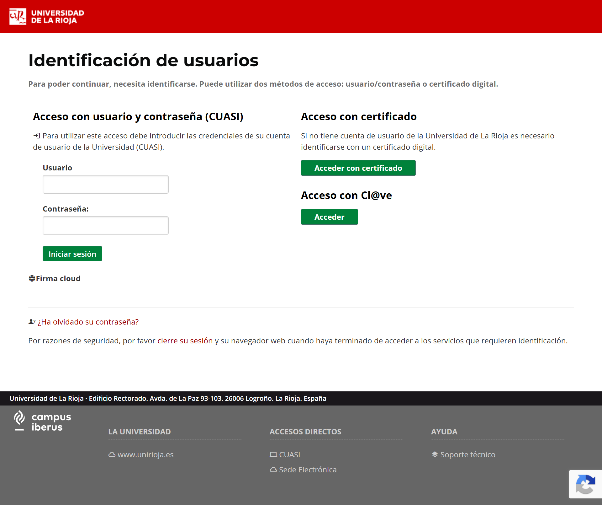
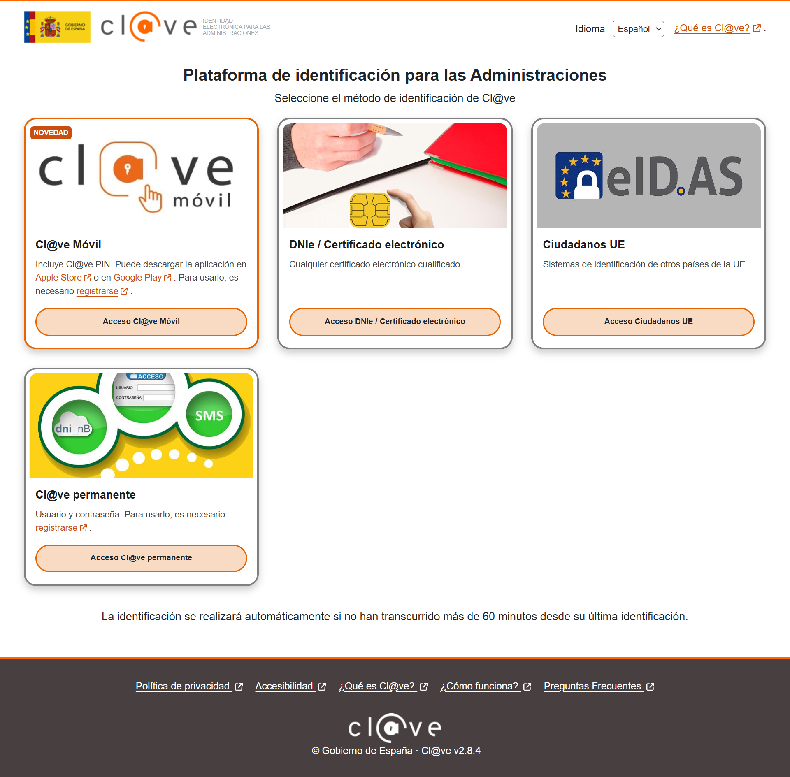
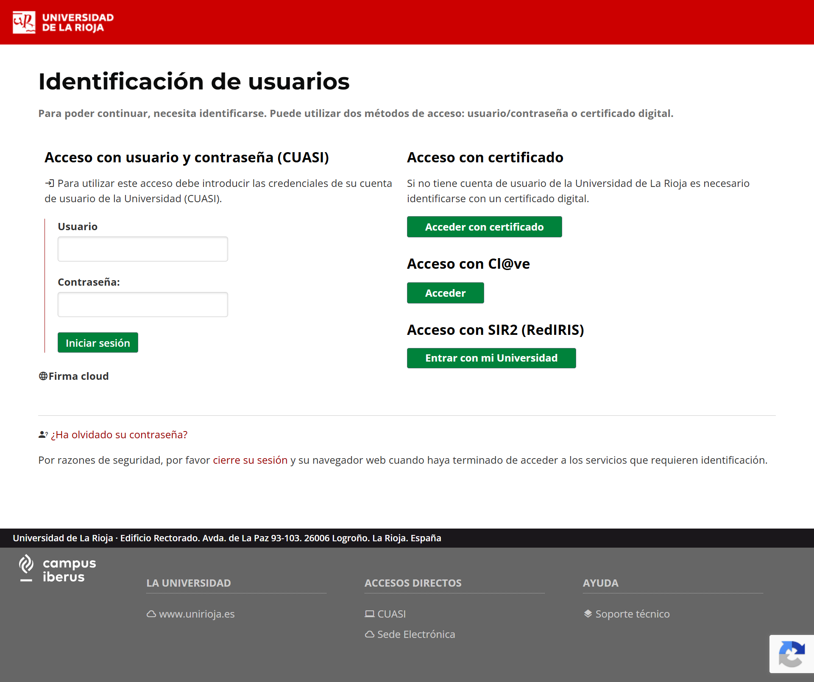

Cl@ve
La idea básica: poder acceder a sede electrónica con Cl@ve:


Planteamiento
En el estudio inicial, para integrar Cl@ve había que indicar al Ministerio nuestro proveedor de telefonía, para que los SMS en caso de recordar contraseña los asuma cada administración. Así se indica en el PAe:
La conexión a Cl@ve implica la emisión de mensajes SMS por medio de los cuales se indica al usuario el código PIN que debe introducir en el momento de la autenticación. Si bien el Convenio para la Prestación Mutua de Servicios de Administración Electrónica no contempla actualmente ninguna contraprestación económica por el uso de estos servicios, la AEAD se reserva la posibilidad de establecer, en el futuro, un coste asociado al envío de SMS necesarios para la utilización de Cl@ve, que deberá ser asumido por el propio organismo usuario. La plataforma SIM de mensajería del Ministerio para la Transformación Digital y de la Función Pública será la encargada de dirigir los mensajes SMS al operador con el cual la entidad solicitante tiene contrato en envío de SMS y para ello se necesitan los datos que aparecen en las siguientes tablas y que dependen del operador.
Sin embargo, gracias a RedIRIS podemos integrarnos con una pasarela que disponen y ahorrarnos el potencial coste. Probablemente, no sería un gran gasto, pero todo es ahorro.
Para este alta se necesita la firma del PER (Persona de Enlace con RedIRIS), Luismi o Chesu.
Acceso con usuario Universidad de origen
Esta funcionalidad es una línea de trabajo diferente a Cl@ve pero relacionada con RedIRIS.
De la misma forma que ha implementado el campus digital del G9 en https://www.uni-g9.net/acceso, es interesante ofrecer la opción de entrar con las credenciales de la Universidad de origen para algunas aplicaciones.

Entre estos casos de usos podríamos encontrar:
- Aplicación de órganos colegiados, de cara a que eventualmente se use para las comisiones de plazas (intervienen PDI de otras universidades)
- Moodle abierto a miembros de la Comunidad Universitaria de España o incluso de fuera (EU Gift).
Para este alta se necesita la firma del PER (Persona de Enlace con RedIRIS), Luismi o Chesu.